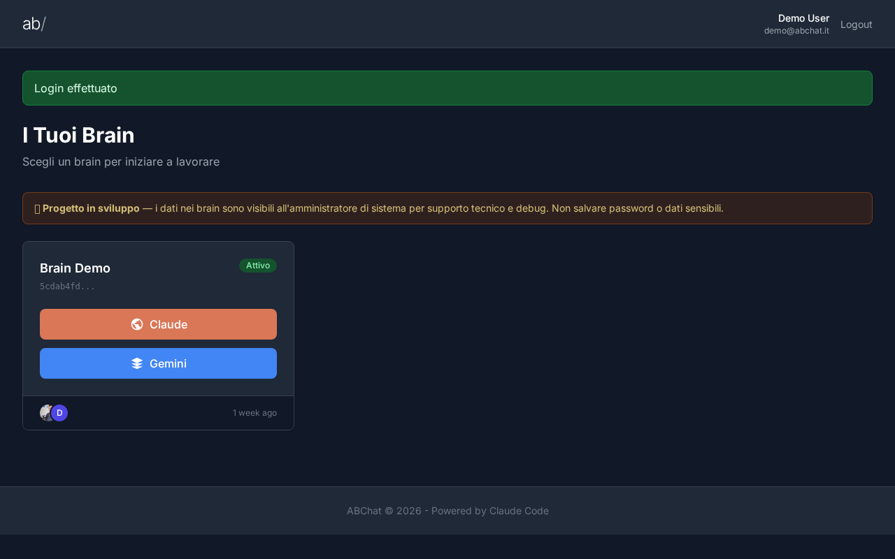
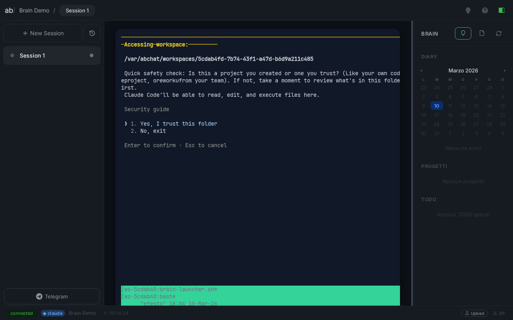
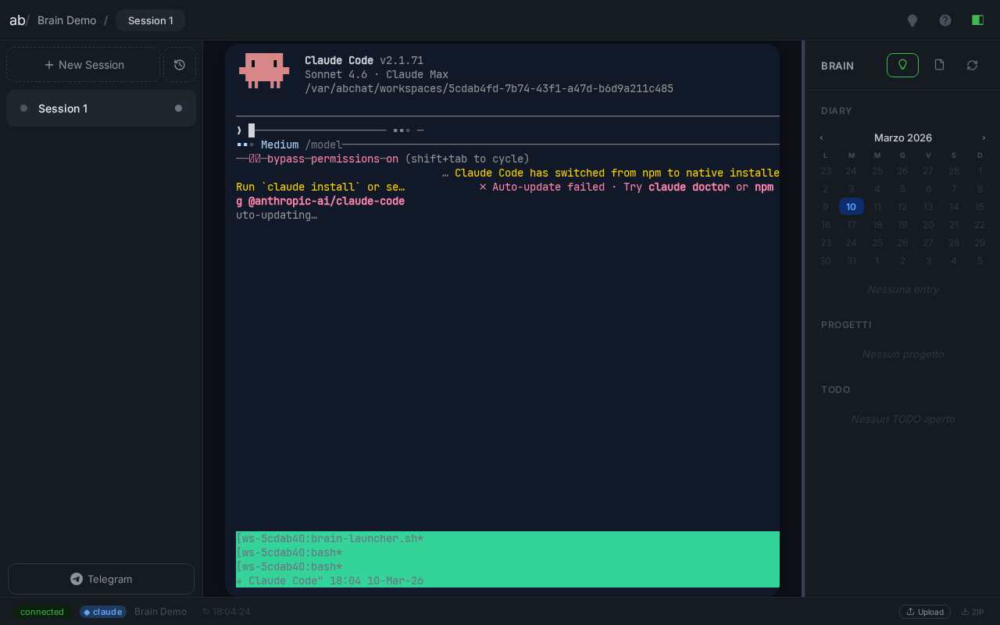
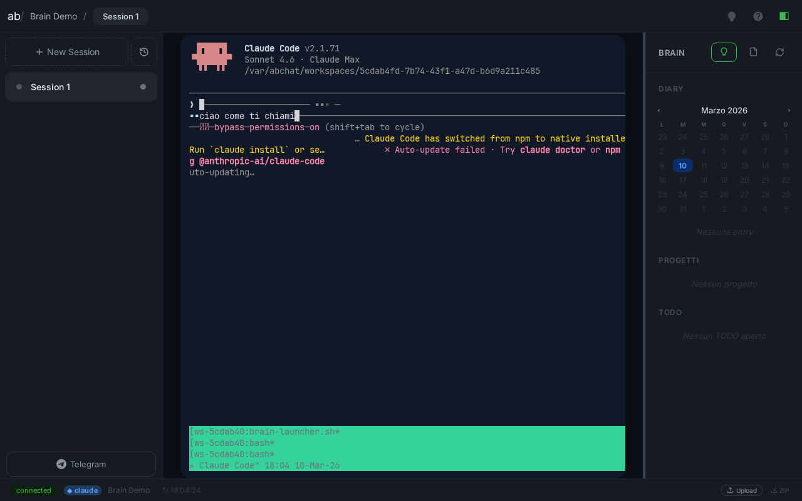
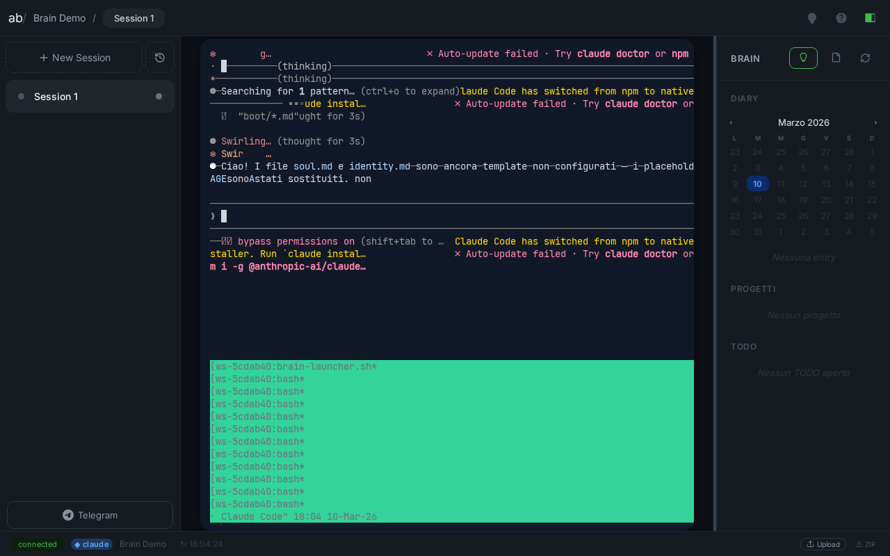

Login via magic link, boot Claude CLI, conversazione bidirezionale, upload file con ownership corretta ws-demo:ws-demo. Nessun errore. L'isolamento dei brain funziona end-to-end.
php artisan radar:login con scadenza 10 min/webssh/demo — pagina brain caricataradar-test-*.txt caricato via Upload button nel footer WebSSHinbox/webssh/ del workspace demows-demo:ws-demo — isolamento corretto, nessun leak cross-brainabchat) a 700/600 (owner-only ws-{slug}:ws-{slug})demo (5cdab4fd-7b74-43f1-a47d-b6d9a211c485)radar_abchat.jsws-{slug}:ws-{slug}server.js: file scritti via sudo -u ws-{slug} tee invece di fs.writeFileSyncbrain-launcher.sh: sidecar eseguito come sudo -u $WS_OWNER (prima girava come giobi).claude.json con hasCompletedOnboardingBrainProvisioningService.php: nuovi brain nascono isolati (700/600, no gruppo abchat)




sudo -u ws-puddu cat /var/abchat/workspaces/alyce/.env